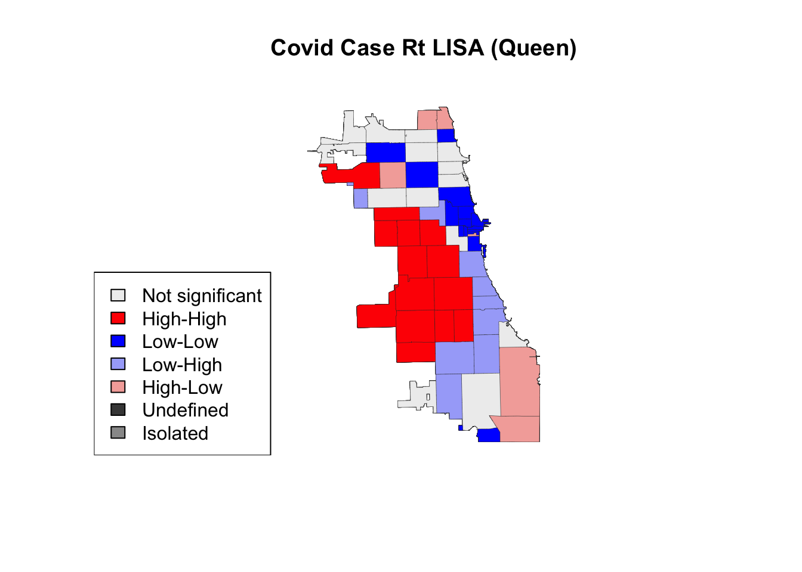
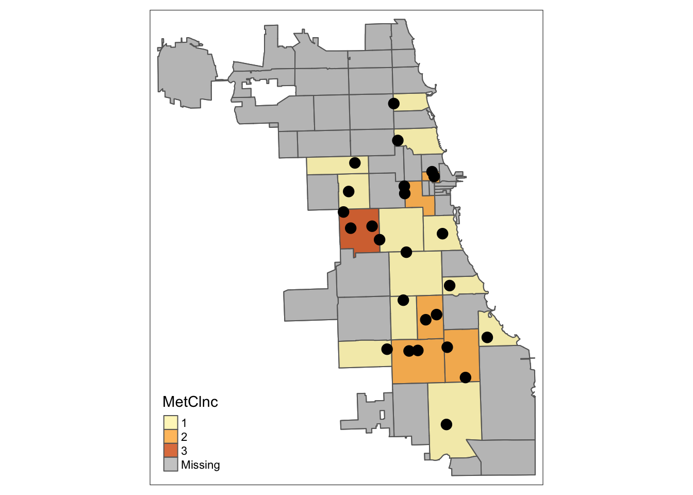

5 Calculate Spatial Metrics
While we’ve generated some nice visualizations, we need insights quantified as metrics at the neighborhood level. Don’t start this step until you have a good idea of what you need. Visualizing and exploring the data in depth is best practice.
For our purposes, we’re interested in developing spatial access metrics with a container method approach. At the end of this tutorial, we’ll generate the following new variables:
- Total number of Methadone Maintenance MOUD by zip code
- Total number of Walkble MOUD Service Areas by zip code
Plus, we will have a new spatial layer, that includes the actual service areas (ie. 1-mile buffers of MOUDs). We assume that access to MOUDs is critical and requires high regularity, and that walking is the most likely option during COVID. This guides the parameter specification of MOUD Service Areas (and is also backed up by some literature in this space, though much more is needed.)
5.1 Load Spatial Data
Let’s first reload our spatial data – this will be the MOUD points, plus the master zip code spatial file.
#library(sf)
#library(tmap)
points <- st_read("data/methadoneMOUD.geojson")## Reading layer `methadoneMOUD' from data source
## `/Users/maryniakolak/Code/Intro2RSpatialMed/data/methadoneMOUD.geojson' using driver `GeoJSON'
## Simple feature collection with 25 features and 8 fields
## Geometry type: POINT
## Dimension: XY
## Bounding box: xmin: -87.7349 ymin: 41.68698 xmax: -87.57673 ymax: 41.9533
## Geodetic CRS: WGS 84areas <- st_read("data/geo_export_54bc15d8-5ef5-40e4-8f72-bb0c6dbac9a5.shp")## Reading layer `geo_export_54bc15d8-5ef5-40e4-8f72-bb0c6dbac9a5' from data source
## `/Users/maryniakolak/Code/Intro2RSpatialMed/data/geo_export_54bc15d8-5ef5-40e4-8f72-bb0c6dbac9a5.shp'
## using driver `ESRI Shapefile'
## Simple feature collection with 61 features and 4 fields
## Geometry type: MULTIPOLYGON
## Dimension: XY
## Bounding box: xmin: -87.94011 ymin: 41.64454 xmax: -87.52414 ymax: 42.02304
## Geodetic CRS: WGS84(DD)dim(points)## [1] 25 9dim(areas)## [1] 61 5head(points)## Simple feature collection with 6 features and 8 fields
## Geometry type: POINT
## Dimension: XY
## Bounding box: xmin: -87.72186 ymin: 41.88474 xmax: -87.63409 ymax: 41.9533
## Geodetic CRS: WGS 84
## X Name Address City
## 1 3 Soft Landing Interventions/DBA Symetria Recovery of Lakeview 3934 N. Lincoln Ave. Chicago
## 2 4 PDSSC - Chicago, Inc. 2260 N. Elston Ave. Chicago
## 3 5 Center for Addictive Problems, Inc. 609 N. Wells St. Chicago
## 4 6 Family Guidance Centers, Inc. 310 W. Chicago Ave. Chicago
## 5 7 A Rincon Family Services 3809 W. Grand Ave. Chicago
## 6 8 * 140 N. Ashland Ave. Chicago
## State Zip fullAdd geo_method geometry
## 1 IL 60613 3934 N. Lincoln Ave. Chicago IL 60613 census POINT (-87.67818 41.9533)
## 2 IL 60614 2260 N. Elston Ave. Chicago IL 60614 census POINT (-87.67407 41.92269)
## 3 IL 60654 609 N. Wells St. Chicago IL 60654 census POINT (-87.63409 41.89268)
## 4 IL 60654 310 W. Chicago Ave. Chicago IL 60654 census POINT (-87.63636 41.89657)
## 5 IL 60651 3809 W. Grand Ave. Chicago IL 60651 census POINT (-87.72186 41.90435)
## 6 IL 60607 140 N. Ashland Ave. Chicago IL 60607 osm POINT (-87.66725 41.88474)head(areas)## Simple feature collection with 6 features and 4 fields
## Geometry type: MULTIPOLYGON
## Dimension: XY
## Bounding box: xmin: -87.80649 ymin: 41.88747 xmax: -87.59852 ymax: 41.93228
## Geodetic CRS: WGS84(DD)
## objectid shape_area shape_len zip geometry
## 1 33 106052287 42720.04 60647 MULTIPOLYGON (((-87.67762 4...
## 2 34 127476051 48103.78 60639 MULTIPOLYGON (((-87.72683 4...
## 3 35 45069038 27288.61 60707 MULTIPOLYGON (((-87.785 41....
## 4 36 70853834 42527.99 60622 MULTIPOLYGON (((-87.66707 4...
## 5 37 99039621 47970.14 60651 MULTIPOLYGON (((-87.70656 4...
## 6 38 23506056 34689.35 60611 MULTIPOLYGON (((-87.61401 4...5.2 Transform Projections
First we need to switch to a projection that uses distance in feet or meters as a metric. We’ll use EPSG:3435 from the first tutorial. To find which EPSG was recommended, I searched “EPSG Illinois feet” and EPSG:3435 came up as a viable candidate. So, we use that for our new, projected CRS.
areas <- st_transform(areas, 3435)
points <- st_transform(points, 3435)We may want to once again confirm they are plotting correctly:
tm_shape(areas) + tm_polygons() +
tm_shape(points) + tm_dots(size = 1)
5.3 Count resources by area
One way of understanding resource inequity is by thinking about how many resources exist in a neighborhood.
First, give the points the attributes of the polygons they are in. Inspect.
pipr <- st_join(points, areas)
head(pipr)## Simple feature collection with 6 features and 12 fields
## Geometry type: POINT
## Dimension: XY
## Bounding box: xmin: 1150707 ymin: 1901294 xmax: 1174632 ymax: 1926255
## Projected CRS: NAD83 / Illinois East (ftUS)
## X Name Address City
## 1 3 Soft Landing Interventions/DBA Symetria Recovery of Lakeview 3934 N. Lincoln Ave. Chicago
## 2 4 PDSSC - Chicago, Inc. 2260 N. Elston Ave. Chicago
## 3 5 Center for Addictive Problems, Inc. 609 N. Wells St. Chicago
## 4 6 Family Guidance Centers, Inc. 310 W. Chicago Ave. Chicago
## 5 7 A Rincon Family Services 3809 W. Grand Ave. Chicago
## 6 8 * 140 N. Ashland Ave. Chicago
## State Zip fullAdd geo_method objectid shape_area shape_len zip
## 1 IL 60613 3934 N. Lincoln Ave. Chicago IL 60613 census 53 53990895 31196.32 60613
## 2 IL 60614 2260 N. Elston Ave. Chicago IL 60614 census 32 94460632 50587.35 60614
## 3 IL 60654 609 N. Wells St. Chicago IL 60654 census 55 15869961 17119.70 60654
## 4 IL 60654 310 W. Chicago Ave. Chicago IL 60654 census 54 31598157 24208.70 60610
## 5 IL 60651 3809 W. Grand Ave. Chicago IL 60651 census 37 99039621 47970.14 60651
## 6 IL 60607 140 N. Ashland Ave. Chicago IL 60607 osm 16 106718949 42663.20 60612
## geometry
## 1 POINT (1162460 1926255)
## 2 POINT (1163663 1915110)
## 3 POINT (1174632 1904257)
## 4 POINT (1174003 1905671)
## 5 POINT (1150707 1908328)
## 6 POINT (1165627 1901294)You should have the same number of rows in pipr as you do in points. If not, there is something off. You may need to go back to troubleshoot. In an earlier version of this lab, I used a saved, written geojson file of the zip codes, and it would not render properly. Here, we load in the original shapefile at the beginning of the tutorial to avoid that error.
dim(pipr)## [1] 25 13dim(points)## [1] 25 9dim(areas)## [1] 61 55.3.1 Count # per Area
Next, count the number per area. The frequency should be logical according to the map you made earlier. Sometimes, I’ve found bugs where the numbers are multipled by some factor; this can be checked by looking at dimension disparities, as noted above.
ptcount <- as.data.frame(table(pipr$Zip))
head(ptcount)## Var1 Freq
## 1 60607 2
## 2 60608 1
## 3 60609 1
## 4 60613 1
## 5 60614 1
## 6 60615 1How could improve on this step if you used dplyr?
Aggregation Tip: What if you have an attribute value you’d like to aggregate? For example, average units of affordable housing facility by zip?
Try aggregate(pip$attribute, by = list(pip$geoid), mean) but build on with a tidy sensibility…
Now we can rename our attributes:
names(ptcount) <- c("zip", "MetClnc")
head(ptcount)## zip MetClnc
## 1 60607 2
## 2 60608 1
## 3 60609 1
## 4 60613 1
## 5 60614 1
## 6 60615 1And finally, merge back to your master zip file:
head(areas)## Simple feature collection with 6 features and 4 fields
## Geometry type: MULTIPOLYGON
## Dimension: XY
## Bounding box: xmin: 1127607 ymin: 1902374 xmax: 1184320 ymax: 1918596
## Projected CRS: NAD83 / Illinois East (ftUS)
## objectid shape_area shape_len zip geometry
## 1 33 106052287 42720.04 60647 MULTIPOLYGON (((1162711 191...
## 2 34 127476051 48103.78 60639 MULTIPOLYGON (((1149304 191...
## 3 35 45069038 27288.61 60707 MULTIPOLYGON (((1133505 190...
## 4 36 70853834 42527.99 60622 MULTIPOLYGON (((1165664 190...
## 5 37 99039621 47970.14 60651 MULTIPOLYGON (((1154895 190...
## 6 38 23506056 34689.35 60611 MULTIPOLYGON (((1180097 190...areas<- merge(areas, ptcount, by="zip", all = TRUE)
head(areas)## Simple feature collection with 6 features and 5 fields
## Geometry type: MULTIPOLYGON
## Dimension: XY
## Bounding box: xmin: 1173038 ymin: 1889918 xmax: 1183259 ymax: 1902959
## Projected CRS: NAD83 / Illinois East (ftUS)
## zip objectid shape_area shape_len MetClnc geometry
## 1 60601 27 9166246 19804.58 NA MULTIPOLYGON (((1177742 190...
## 2 60602 26 4847125 14448.17 NA MULTIPOLYGON (((1181226 190...
## 3 60603 19 4560229 13672.68 NA MULTIPOLYGON (((1179499 190...
## 4 60604 48 4294902 12245.81 NA MULTIPOLYGON (((1174763 189...
## 5 60605 20 36301276 37973.35 NA MULTIPOLYGON (((1178341 189...
## 6 60606 31 6766411 12040.44 NA MULTIPOLYGON (((1174681 190...Quickly map to inspect:
tm_shape(areas) + tm_polygons(col = "gray80") +
tm_shape(areas) + tm_polygons(col = "MetClnc", style = "pretty", alpha = 0.8) +
tm_shape(points) + tm_dots(size = 0.5) 
5.4 Buffer Data
Next, lets create a walkable buffer of one mile, or 5280 feet, for our MOUD provider locations. Individuals residing in places outside of that walkable area may have difficulty accessing this medication during crises, like a pandemic.
# Create 1mile buffers for each point
ptbuffers <- st_buffer(points, 5280)
head(ptbuffers)## Simple feature collection with 6 features and 8 fields
## Geometry type: POLYGON
## Dimension: XY
## Bounding box: xmin: 1145427 ymin: 1896014 xmax: 1179912 ymax: 1931535
## Projected CRS: NAD83 / Illinois East (ftUS)
## X Name Address City
## 1 3 Soft Landing Interventions/DBA Symetria Recovery of Lakeview 3934 N. Lincoln Ave. Chicago
## 2 4 PDSSC - Chicago, Inc. 2260 N. Elston Ave. Chicago
## 3 5 Center for Addictive Problems, Inc. 609 N. Wells St. Chicago
## 4 6 Family Guidance Centers, Inc. 310 W. Chicago Ave. Chicago
## 5 7 A Rincon Family Services 3809 W. Grand Ave. Chicago
## 6 8 * 140 N. Ashland Ave. Chicago
## State Zip fullAdd geo_method geometry
## 1 IL 60613 3934 N. Lincoln Ave. Chicago IL 60613 census POLYGON ((1167740 1926255, ...
## 2 IL 60614 2260 N. Elston Ave. Chicago IL 60614 census POLYGON ((1168943 1915110, ...
## 3 IL 60654 609 N. Wells St. Chicago IL 60654 census POLYGON ((1179912 1904257, ...
## 4 IL 60654 310 W. Chicago Ave. Chicago IL 60654 census POLYGON ((1179283 1905671, ...
## 5 IL 60651 3809 W. Grand Ave. Chicago IL 60651 census POLYGON ((1155987 1908328, ...
## 6 IL 60607 140 N. Ashland Ave. Chicago IL 60607 osm POLYGON ((1170907 1901294, ...Inspect immediately:
tm_shape(areas) + tm_borders() +
tm_shape(ptbuffers) + tm_borders(col = "blue") 5.5 Count buffers by area
We know that MOUD locations are accessible up to one mile away. So, a total count of resources by area may be too restrictive. Let’s calculate how many walkable MOUD clinics are in each zip code. Or, how many buffers are in each area…
bufferct <- lengths(st_intersects(areas, ptbuffers))
head(bufferct)## [1] 2 2 1 1 1 2Stick buffer totals back to the zip master file:
# Stick buffer totals back to the census master file
areas <- cbind(areas,bufferct)
head(areas)## Simple feature collection with 6 features and 6 fields
## Geometry type: MULTIPOLYGON
## Dimension: XY
## Bounding box: xmin: 1173038 ymin: 1889918 xmax: 1183259 ymax: 1902959
## Projected CRS: NAD83 / Illinois East (ftUS)
## zip objectid shape_area shape_len MetClnc bufferct geometry
## 1 60601 27 9166246 19804.58 NA 2 MULTIPOLYGON (((1177742 190...
## 2 60602 26 4847125 14448.17 NA 2 MULTIPOLYGON (((1181226 190...
## 3 60603 19 4560229 13672.68 NA 1 MULTIPOLYGON (((1179499 190...
## 4 60604 48 4294902 12245.81 NA 1 MULTIPOLYGON (((1174763 189...
## 5 60605 20 36301276 37973.35 NA 1 MULTIPOLYGON (((1178341 189...
## 6 60606 31 6766411 12040.44 NA 2 MULTIPOLYGON (((1174681 190...Map density of buffers per census area:
tm_shape(areas) + tm_polygons(col = "bufferct", palette = "BuGn", n=5, style = "jenks") +
tm_shape(ptbuffers) + tm_fill(col = "gray90", alpha=0.6) +
tm_shape(points) + tm_dots(col = "gray10", size = 0.3) 5.6 Integrate & Explore
Let’s review: our master area file now has total number resources by zip and total number of walkable service areas by zip.
Using your new spatial file, see if you can answer some of these quetions using various queries:
Which zip codes have high rates of COVID and are not within a walking distance of a methadone MOUD?
Which zip codes have worse access to affordable rental units, low educational rates, and less walkable access to MOUDs?
What is the demographic and racial/ethnic characteristics of areas most vulnerable to high COVID rates in September 2020?
Generate different maps and outputs to drive your thinking and defend your hypothesis formation.